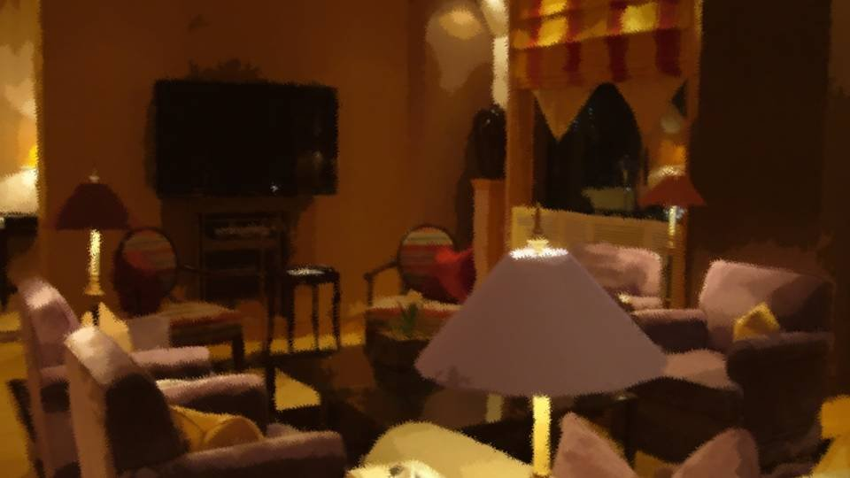

Script 00001AB5
"I'm hooome."
"Welcome back, Momoko. Was Erina a good girl?"
"Yep, as you can see."
"Mommy, I'm home!"
"Oh, welcome back! How were the flowers?"
"Guess what, a person, went whooosh, and fell down!"
"A person fell...?"
"Welcome back, Momoko. Was Erina a good girl?"
"Yep, as you can see."
"Mommy, I'm home!"
"Oh, welcome back! How were the flowers?"
"Guess what, a person, went whooosh, and fell down!"
"A person fell...?"
"Ah, Erina! Let's hurry up and have a snack!
You said you wanted ice cream, didn't you?"
"Yaaay! Ice creeeam!"
"Yaaay! Ice creeeam!"

"Erina's down for a nap."
"I see..."
"What's wrong, Momoko? You seem down. You haven't touched your ice cream at all, either..."
"Yeah... Erina said it, didn't she? That a person fell."
"Was somebody climbing a tree or something?"
"Sorry, Mom, I'm going to bed too."
"It's still the middle of the day, you know?"
"I see..."
"What's wrong, Momoko? You seem down. You haven't touched your ice cream at all, either..."
"Yeah... Erina said it, didn't she? That a person fell."
"Was somebody climbing a tree or something?"
"Sorry, Mom, I'm going to bed too."
"It's still the middle of the day, you know?"
"I'm feeling a little sick..."
"Are you okay? Do you have a fever? Should I make you some rice porridge?"
"No, I'm just a little sleepy."
"Are you okay? Do you have a fever? Should I make you some rice porridge?"
"No, I'm just a little sleepy."